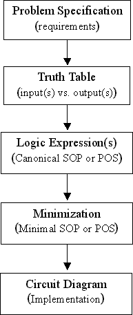
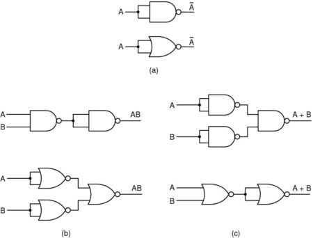
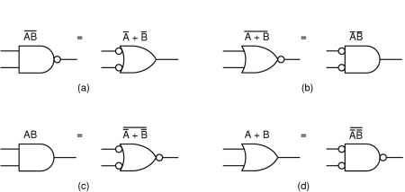
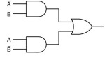
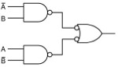
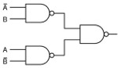
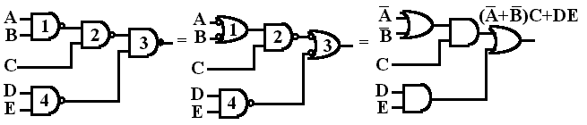

Implementation of Combinational Logic Functions
Very Important Logic Relations
AND is true iff all its inputs are true.
OR is true iff any non-zero number of inputs are true.
NOT is true iff its single input is false.
NAND is false iff all its inputs are true.
NOR is false iff any non-zero no. of inputs are true.
XOR is true iff its two inputs are different.
XNOR is true iff its two inputs are identical.
Multistage XOR has output = true iff any odd number of inputs are true, so it implements all odd functions.
e.g., Multistage XOR implements all odd functions.
Multistage XNOR has output = true iff any even number of inputs are true, so it implements all even functions.
e.g., Multistage XNOR implements all even functions.
AND with some inverted inputs implements a logic of “inhibit gate”. It is true only if all inhibit inputs are false.
Design Procedure

Examples
A 2-bit Comparator
A half-adder
A full-adder


NAND-NAND circuits
Example: XOR function
F(A, B) = A'B + AB'
= (A'B + AB')'' [x'' = x]
= ( (A'B)' (AB')')' [(x+y)' = x' + y']
circuit:
|  |  |  |
|
F(A,B) = A'B + AB' |
F(A,B) = (A'B)'' + (AB')'' | F(A,B) = ((A'B)' (AB')')' |
Example: F(A, B) = A'B + AB' = (A'B + A) (A'B + B')
= (A'+A)(B+A)(A'+B')(B+B')
= (A+B)(A'+B')
= ((A+B)(A'+B'))''
= ((A+B)' +(A'+B')')'
circuit:
